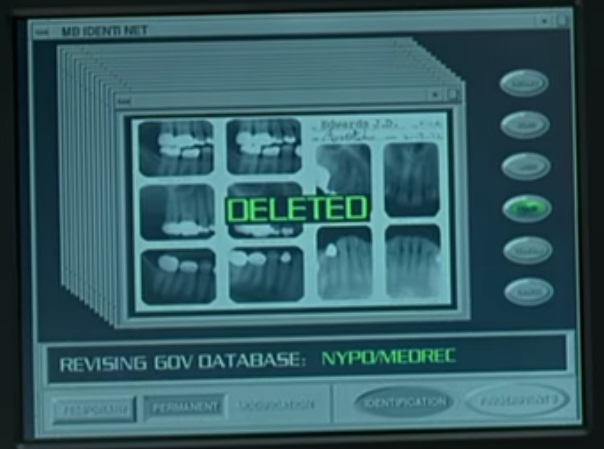

From the 1983 film Flashdance, character Alex played by Jennifer Beals is said to have an SSN of 174-63-1503. This was pretty poor planning by the writers of the time, though in 1983 they probably could not have known the full ramifications of how the SSN numbers would be used in the future. At the time, 174 assigned to Pennsylvania was not on a reserved list, so this was pretty clearly a random number the writers wrote in. They were pretty lucky that the sequential assignment never used this number and now the number is part of the random pool - so it is technically possible to still have this number assigned to an American in the future. from catiebug on reddit:
The three digit area number of 173 is real and it's in Pennsylvania. The two digit group number was issued in a systematic but slightly bizarre order that is intended to make it difficult to immediately guess based on someone's birthdate. You can go to the SSN wiki article to see the details, but basically, Pennsylvania never even came close to issuing group number 63. And they won't now, because regional and serial assignment has gone away and everything is issued randomly.
Could the new random number system possibly generate that number and assign it by accident? Possibly, but the odds are insanely high. There are 1 billion possible SSNs out there and about 450 million have been issued. So the odds of the computer spitting out that exact number for a baby or new citizen today is 1 out of 550 million. But since the SSA maintains a list of numbers that are retired and not assignable due to death of the original holder, it's possible they've had the foresight to place this number in that index.
174-63-1503
174631503
174.63.1503
174 63 1503
*Footnote: From numchk 174-63 we see that there are no records of assignment in this block. however, from blocks by state we see that this is still in the allowed range, even for random assignment now.
other forms of identity removed included birth certificate, dental records, gym membership, police department badge, and passport.



NumChk
info@numchk.com